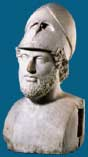
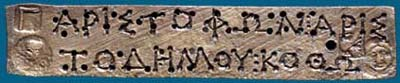

Athens
| Athens was one of the most important and powerful cities in Greece during
the Classical period. It was also the first of the Greek city states fully
to develop democracy. It was very important for Athenians to take an active
part in the running of Athenian government. Perikles, the great statesman
of Classical Athens, said that Athenians thought of 'a man who |
|

Perikles
|
takes no interest in public
affairs not as apathetic,
but as completely useless.'
Male citizens in Athens could vote on all the decisions that affected the city and serve on juries. However, democracy was not open to everyone. Citizen women and children were not allowed to vote. Slaves and foreigners living in Athens (known as metics) were banned from participating in government.

The city was also a great centre for art and literature. Writers, artists and philosophers flocked to Athens, where they could work and think in freedom. For many centuries afterwards, anyone interested in learning would go to Athens to study.

|
|
|
A day in the life of Athens
|
Take a tour of the city
|
Find the citizens!
|

|
|